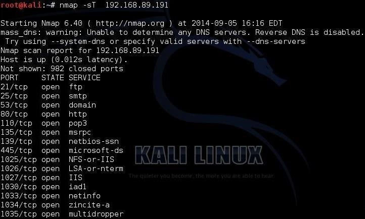

The Nmap project tries to defy the stereotype of some open source software being poorly documented by providing a comprehensive set of documentation for installing and using Nmap. This page links to official Insecure.Org documentation, /;and generous contributions from other parties.

Sometimes we are looking for a specific port or a port range. Nmap uses the -p switch to designate a port or port range. So, if we were only looking for ports 25-150, we could use: kali > nmap 192.168.89.191 -p25-150
